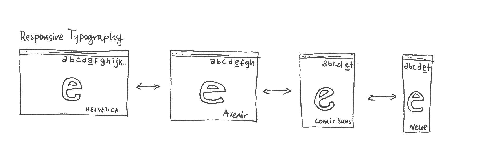
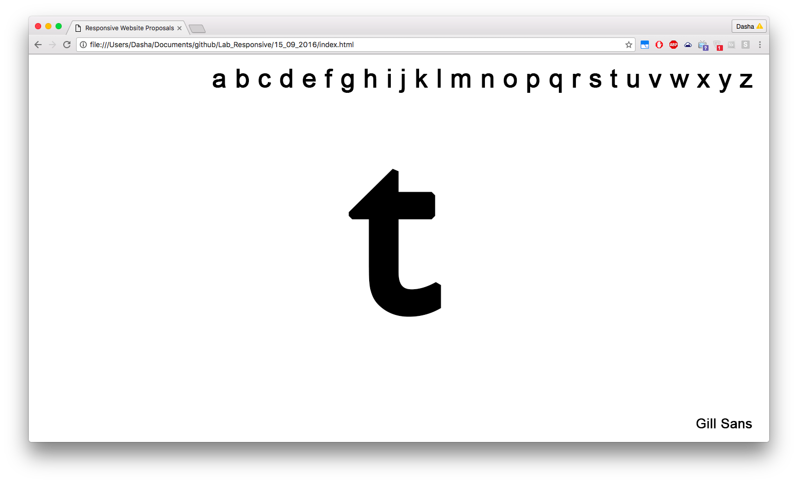
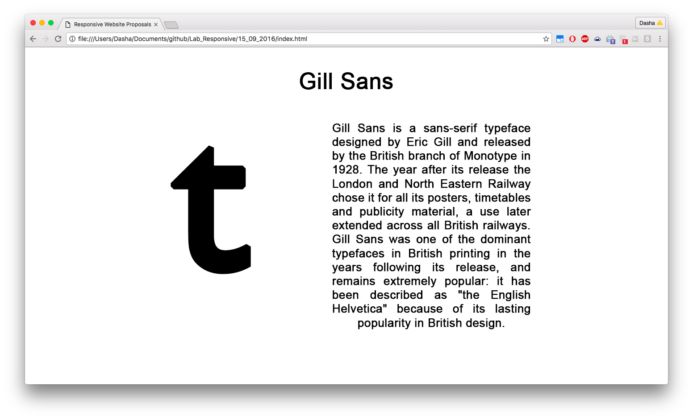

2. Responsive Typography

Responsive Typography is a responsive webpage, that proposes
to its viewers to interact with it by choosing a letter of
the alphabet and resizing the window of their browser to see
how the letter looks like in different typefaces. Clicking on the name
of a typeface would take you to a page that would tell you more about
the typeface.

